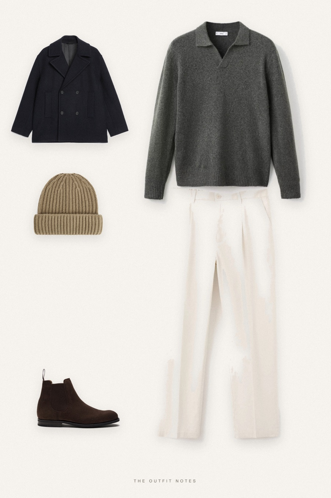

Paris Evergreen
pea coat over a green knit polo

Old money winter outfit for men: ARKET navy wool-blend pea coat over a dark green Mango knit polo, fluid cream pleated trousers, Church's suede chelsea boots and a ribbed beige beanie. A quiet luxury men's look for cold Paris mornings that still reads sharp.
The pieces
This page contains affiliate links: if you buy through them, we may earn a commission at no extra cost to you. Disclosure.
 ARKET
ARKET
Navy wool pea coat
Shop Mango
Mango
Dark open-collar knit polo
Shop Mango
Mango
Cream pleated fluid trousers
Shop Church's
Church's
Brown suede chelsea boots
Shop ARKET
ARKET
Beige ribbed wool beanie
Shop
Prices are indicative, taken when the look was published, and may have changed. Pictures of the outfit are AI-generated illustrations of real products; the product photos are the retailers' own.
Published 1 October 2026.